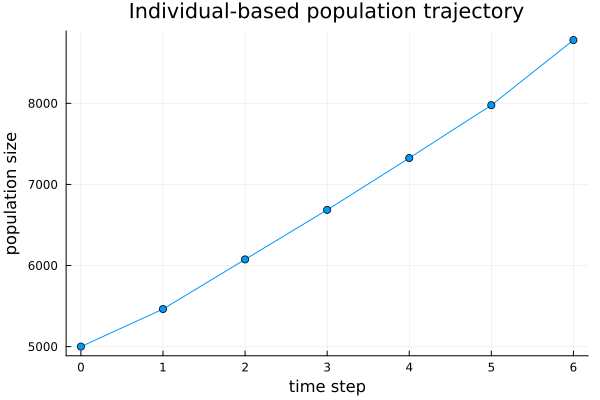
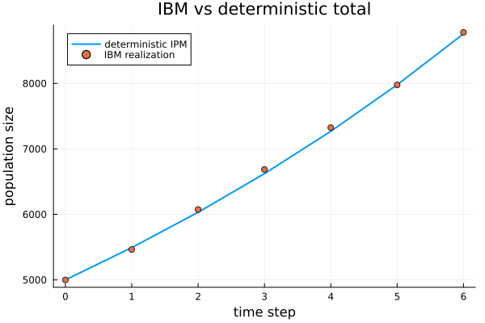
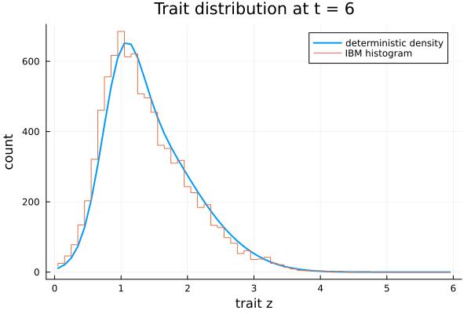

Introduction: individual-based realizations
This package realizes structured population models as individual-based models (IBMs) on the Ark.jl entity-component-system. Each individual is an entity carrying a continuous Size trait; birth spawns an entity, death despawns one, and growth updates the trait. The IBM is the finite- $N$ ground truth whose large-$N$ limit is the deterministic IPM, while also capturing demographic stochasticity and extinction.
Vital rates and domain
We reuse the IntegralProjectionModels.jl vital-rate types. Here survival and per-capita fecundity are size-independent (so the deterministic total is exact for any mesh), while growth and recruitment are genuine distributions over the trait.
using IndividualBasedPopulationDynamics
using IntegralProjectionModels
using StructuredPopulationCore: meshpoints, step_size,
sample_survives, sample_growth, offspring_count
using Random, Statistics, Plots
survival = LinearSurvival(1.0, 0.0) # logistic(1.0) ≈ 0.73
growth = NormalGrowth(0.5, 0.8, 0.4) # z' ~ Normal(0.5 + 0.8 z, 0.4)
fecundity = FecundityRate(-1.0, 0.0, 1.0, 0.3, 1.0) # ≈ 0.37 offspring; recruits ~ Normal(1, 0.3)
domain = ContinuousDomain(0.0, 6.0, 60)The samplers turn these descriptions into per-individual draws:
rng = Random.Xoshiro(2024)
(survives = sample_survives(rng, survival, 2.0),
grown = sample_growth(rng, growth, 2.0, domain),
n_offspring = offspring_count(rng, fecundity, 2.0, domain))(survives = true, grown = 1.6083019669659286, n_offspring = 0)Building and running an IBM
N0 = 5000
traits0 = clamp.(2.0 .+ 0.5 .* randn(rng, N0), 0.01, 5.99)
world = ibm_world(survival, growth, fecundity, domain;
rng = rng, traits0 = collect(traits0))
res = ibm_run!(world, 6; save_traits = true)
res.N7-element Vector{Int64}:
5000
5463
6075
6686
7325
7977
8780plot(0:6, res.N; marker = :circle, legend = false,
xlabel = "time step", ylabel = "population size",
title = "Individual-based population trajectory")
Comparison with the deterministic IPM
Seeding the deterministic IPM from the same initial individuals (binned onto the mesh), the IBM tracks it.
kernel = PKernel(survival, growth, domain) + FKernel(fecundity, domain)
z = meshpoints(domain)
h = step_size(domain)
n0 = zeros(length(z))
for zt in traits0
n0[clamp(floor(Int, (zt - domain.lower) / h) + 1, 1, length(z))] += 1
end
detsol = solve(IPMProblem(kernel, domain, n0, (0, 6)), DirectIteration())
det_total = [sum(u) for u in detsol.u]plot(0:6, det_total; label = "deterministic IPM", lw = 2)
plot!(0:6, res.N; seriestype = :scatter, label = "IBM realization",
xlabel = "time step", ylabel = "population size",
title = "IBM vs deterministic total")
The trait distribution matches too:
ibm_hist = trait_histogram(world, domain)
plot(z, detsol.u[end]; label = "deterministic density", lw = 2)
plot!(z, ibm_hist; seriestype = :steppre, label = "IBM histogram",
xlabel = "trait z", ylabel = "count", title = "Trait distribution at t = 6")
Eviction and small populations
Traits that would leave the domain are handled by an eviction policy (:reflect, :clamp, or :discard); all individuals stay in-domain:
all(0.0 .<= res.traits[end] .<= 6.0)trueBecause the IBM tracks discrete individuals, small sub-critical populations can go extinct — behaviour the deterministic density cannot represent:
poor_survival = LinearSurvival(-1.0, 0.0) # logistic(-1) ≈ 0.27
no_recruits = FecundityRate(-50.0, 0.0, 1.0, 0.3, 1.0)
small = ibm_world(poor_survival, growth, no_recruits, domain;
rng = Random.Xoshiro(7), traits0 = fill(2.0, 30))
ibm_run!(small, 40).N[end] # extinct0